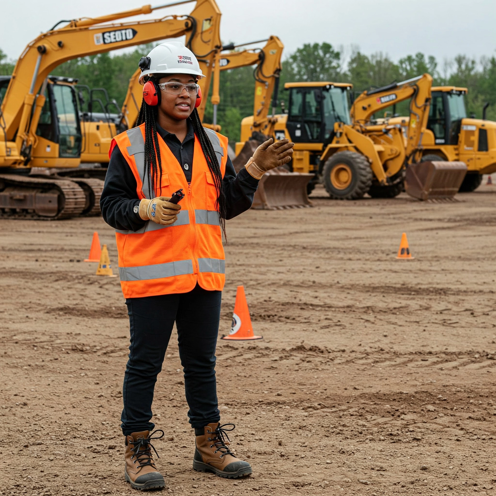

Curso Online Instructor de Operadores de Equipos Pesados - Formación para Formadores en Iquique
¡PRONTO!
Modalidad 100% Virtual
Descripción del Curso Online para Formadores en Iquique
Este completo programa de formación online está diseñado para desarrollar las competencias esenciales que permitirán a los participantes de Iquique y otras regiones desempeñarse eficazmente como instructores de operadores de equipos pesados dentro de la exigente industria minera y otros sectores relacionados.
Nuestro enfoque de enseñanza online se basa en el constructivismo, donde el instructor virtual actuará como un facilitador del aprendizaje, fomentando activamente la participación y la construcción colaborativa del conocimiento por parte de cada uno de los participantes.
Modalidad de Ejecución del Curso Online
100% Virtual
Este programa se llevará a cabo íntegramente en formato virtual, utilizando plataformas interactivas como Teams, Zoom y nuestra intuitiva Aula Virtual. Esto garantiza una mayor flexibilidad horaria y accesibilidad geográfica para todos los participantes interesados desde Iquique y cualquier otro lugar.
Malla Curricular del Curso Online para Instructores
El curso se organiza en los siguientes módulos, cuidadosamente diseñados en base al Marco de Cualificaciones para la Minería (MCM) y adaptados para una efectiva enseñanza virtual:
Módulo I: El Proceso de Aprendizaje en Entornos Virtuales
- Cómo ocurre el aprendizaje online: Principios y estrategias.
- Teorías del aprendizaje aplicadas a la formación virtual: Conductismo, Cognitivismo, Constructivismo.
- Andragogía y el aprendizaje de adultos online: Adaptando las metodologías.
- Actores clave en el aprendizaje virtual: Rol del participante y del instructor online.
- Estilos de aprendizaje y estrategias de enseñanza virtual: Personalización de la formación.
Módulo II: Marco de Cualificaciones para la Minería (MCM) y su Aplicación Online
- Introducción al Marco de Cualificaciones Minero: Relevancia y objetivos.
- Estructura y uso del MCM en la planificación de la formación virtual.
- Descriptores de nivel y dimensiones adaptados a la evaluación online.
- Diseño de rutas de aprendizaje virtual basadas en el MCM.
Módulo III: Enfoque de Competencias en la Formación Virtual
- Estrategias de enseñanza-aprendizaje virtual bajo un enfoque de competencias.
- Características del desempeño efectivo del instructor y del participante en línea.
Módulo IV: Diseño Instruccional para Cursos Virtuales de Equipos Pesados
- Componentes esenciales del plan formativo y del diseño instruccional virtual.
- Identificación de características y necesidades de los participantes online.
- Preparación y selección de recursos didácticos para el aprendizaje grupal virtual.
- Organización y secuenciación de las sesiones formativas virtuales.
Módulo V: Facilitación del Aprendizaje en Plataformas Virtuales
- Rol y funciones del instructor como facilitador en el entorno virtual.
- Hitos instrumentales que favorecen la interacción y el aprendizaje online.
- Competencias conductuales clave para un instructor virtual eficaz.
- Planificación y gestión de sesiones de aprendizaje virtual interactivas.
Módulo VI: Evaluación del Proceso de Aprendizaje Virtual
- Diseño y organización de la evaluación en entornos virtuales.
- Instrumentos y técnicas de evaluación online (cuestionarios, foros, tareas, etc.).
- Estrategias para proporcionar retroalimentación efectiva en línea.
- Implementación de Portafolios de Evidencias digitales.
Módulo VII: Registro y Sistematización de Información en la Formación Virtual
- Importancia del registro y la sistematización de datos en la formación online.
- Herramientas y métodos para el registro de datos e información virtual.
- Elaboración de informes de seguimiento y evaluación de cursos virtuales.
Módulo VIII: Autodesarrollo del Instructor Virtual
- Relevancia de la formación continua para instructores en línea.
- Acciones y recursos para el desarrollo profesional continuo en el ámbito virtual.
- Planificación del itinerario formativo personal como instructor virtual.
¿A Quiénes Se Dirige Este Curso Online?
Este curso online está especialmente diseñado para profesionales y técnicos con sólida experiencia en la operación de equipos pesados en Iquique y otras regiones mineras, que deseen desarrollar las habilidades pedagógicas y técnicas necesarias para formar a las nuevas generaciones de operadores de manera efectiva en entornos virtuales.
Curso Online Disponible Para
Persona o Empresa
Aprobación y Certificación Online
Los participantes que completen satisfactoriamente todos los módulos y actividades del curso online recibirán un certificado digital que acreditará su competencia como Instructor de Operadores de Equipos Pesados en la modalidad virtual.
Consultar Inscripción